Shell, interfaz de usuario o procesador de comandos
Software involucrado
Interfaces de usuario
Shell o procesador de comandos
Opcionalmente, entorno gráfico
Programas de administración
Editores, navegador de archivos
Monitores de sistema, registros de eventos
Programas de comunicaciones
Navegador, transferencia de archivos, mail, mensajería
Soporte de programación
Compiladores, intérpretes, bibliotecas
Kernel o núcleo
Componente fundamental del sistema operativo
Conjunto de rutinas residentes en memoria
Controla el hardware y los recursos lógicos
Corre en modo privilegiado del procesador
Ofrece los servicios a los procesos mediante llamadas al sistema o system calls
Modo de ejecución dual
Modo de ejecución dual
Modo de ejecución dual
Modo de ejecución dual
Aplicaciones
Bibliotecas
Kernel
Llamadas al sistema
Cronología
Cronología
Cronología
Cronología
Servicios del SO
Múltiples usuarios y tareas
Ejecución de programas
Gestión de archivos
Operaciones de Entrada/Salida
Gestión de memoria
Protección
Ejecución de programas
Ejecución de programas
Interfaz de usuario o shell
Proceso
Un programa en ejecución
Estados de los procesos
Planificación, o scheduling
Concurrencia y paralelismo
Estados de los procesos
Sistema multiprogramado
Estados de los procesos
Sistema multiprogramado
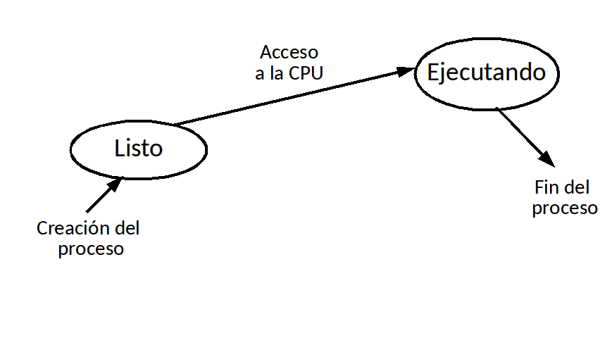
Estados de los procesos
Sistema multiprogramado
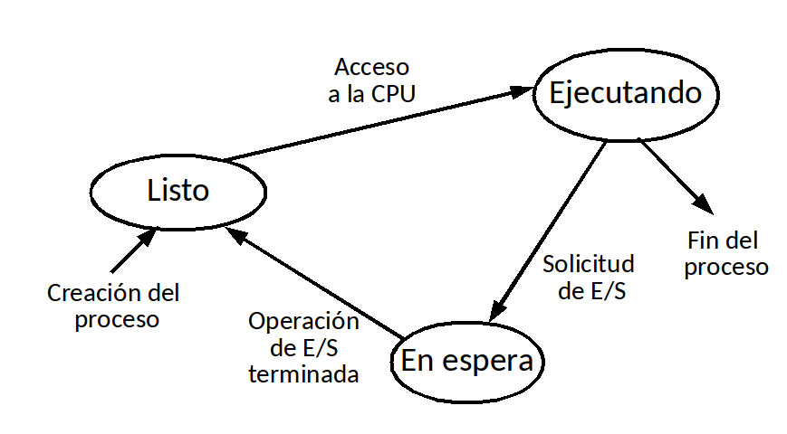
Estados de los procesos
Tiempo compartido o time sharing
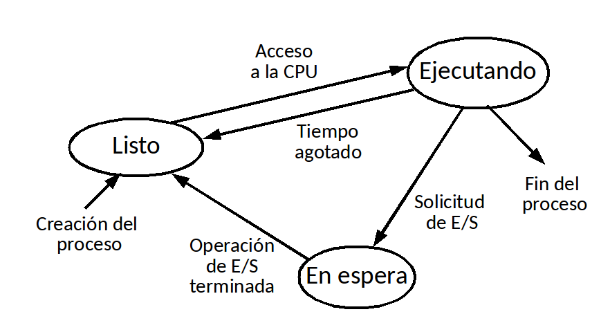
Procesos concurrentes
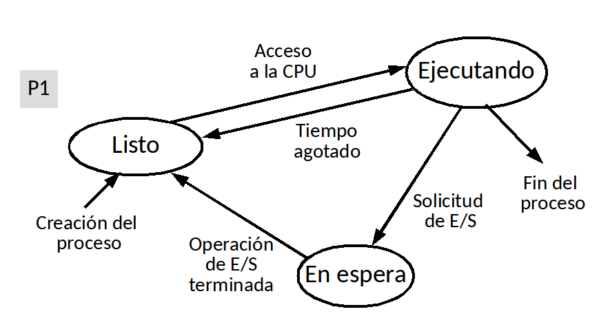
Procesos concurrentes
Procesos concurrentes
Procesos concurrentes
Procesos concurrentes
Procesos concurrentes
Procesos concurrentes
Procesos concurrentes
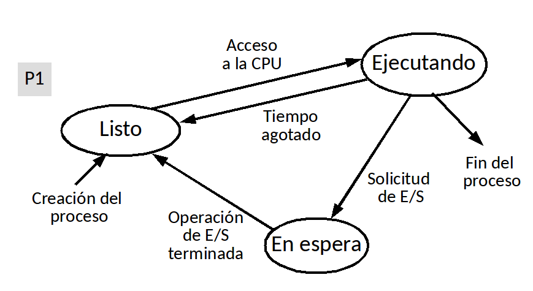
Procesos paralelos
Procesos
Procesos
Comandos de procesos
ps
-f, -a, -x
Lista procesos
pstree
Jerarquía de procesos
top
Monitor de procesos
nice
Cambia prioridad
kill
Envía una señal
Gestión de archivos
Gestión de archivos
Archivos
Datos almacenados en un medio persistente
Sistema de archivos o file system
Un componente del kernel que organiza los archivos
Metadatos
Datos acerca de los datos (tamaño del archivo, fecha de creación, atributos, permisos)
Estructura jerárquica de directorios
Árbol de directorios
Sistema de archivos
Particiones
Bloques
Superblock
Inodos
Sistema de archivos
Particiones
Sistema de archivos
Bloques
Sistema de archivos
Superblock
Sistema de archivos
Tabla de inodos
Sistema de archivos
Metadatos
Sistema de archivos
Bloques de datos
Inodos
Tamaño del archivo
Dueño, grupo
Tipo de archivo
Archivo regular, directorio
Dispositivo de caracteres o de bloques
Socket, tubería, otros
Modo o permisos de acceso
Lectura, escritura, ejecución
Dueño, grupo, resto del mundo
Tiempos de modificación y de acceso
Cuenta de links
Punteros a bloques
Punteros directos a bloques
Punteros indirectos
Punteros doble-indirectos
Directorio
Búsqueda de un archivo
cat /etc/group
Búsqueda de un archivo
cat /etc/group
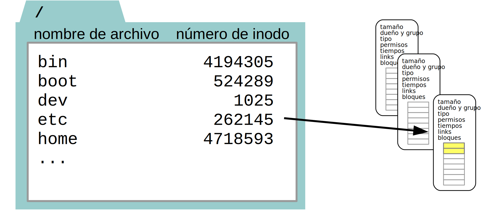
Búsqueda de un archivo
cat /etc/group
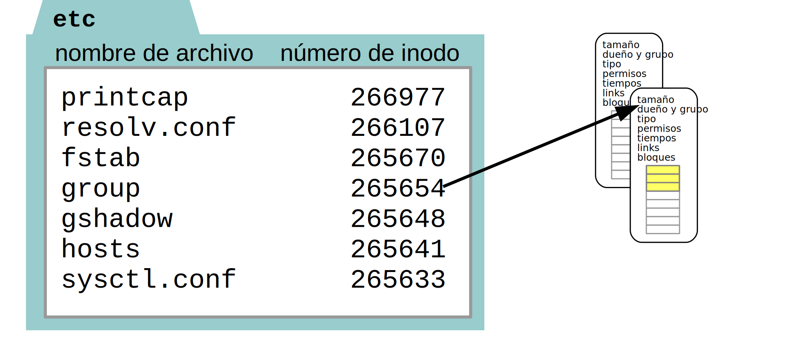
Búsqueda de un archivo
cat /etc/group
Comandos de archivos
ls
-a, -l, -R, -t
Lista archivos
cat
Muestra contenido
cp
Copia
mv
Renombra o mueve
rm
Borra
Comandos de directorios
ls
-a, -l, -R, -t
Lista archivos
mkdir
Crea
rmdir
Borra
mv
Renombra o mueve
cd
Cambia al directorio
Gestión de memoria
Memoria contigua
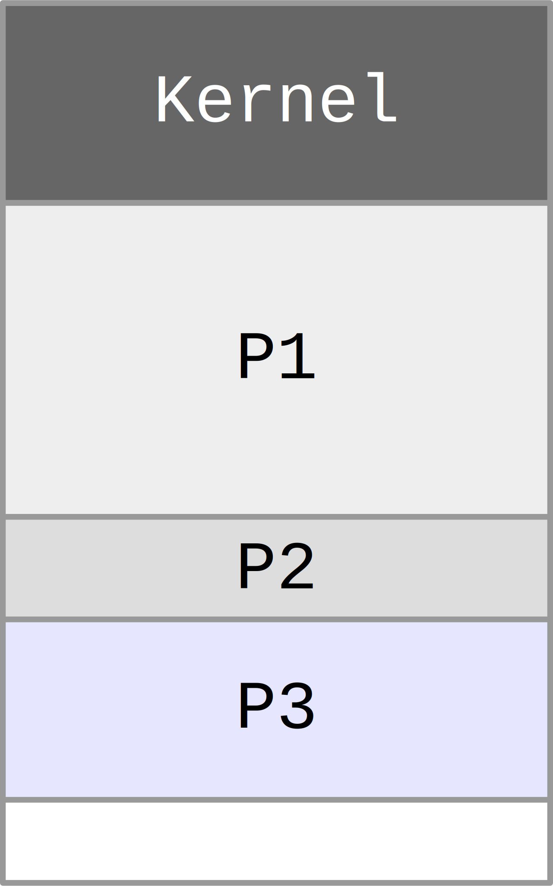
Fragmentación externa
Fragmentación externa
Fragmentación externa
Asignación de memoria contigua
Un proceso → una región de memoria
Particiones de tamaño variable
Fragmentación externa
Compactación → Sobrecarga
Segmentación
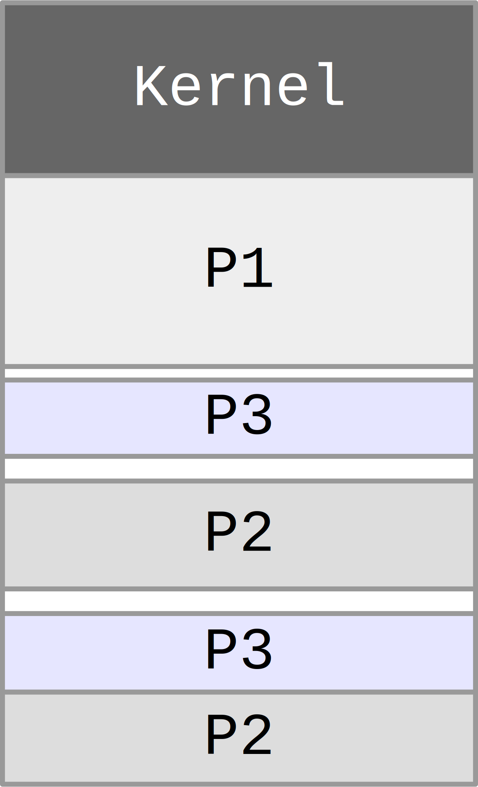
Asignación de segmentos
Un proceso → un conjunto de segmentos
Arquitectura de CPU segmentada
Modelo de programación segmentado
Segmentos de código, de datos, de pila
Apoyo del hardware → MMU
Se reduce la fragmentación externa
Protección
MMU, Memory Management Unit
Tabla de segmentos por cada proceso
Traduce direcciones lógicas a físicas
Direcciones lógicas segmento:desplazamiento
0010:0100 → 000010100
N° segmento
Límite
Base
0000
0100
000011000
0001
1010
000000000
0010
0111
000010000
Traducción de direcciones
Una instrucción de CPU hace una referencia a la dirección lógica S:D (segmento:desplazamiento)
Usando S, la MMU consulta la tabla de segmentos del proceso
Si D es mayor que el límite de ese segmento, provoca una condición que interrumpe el proceso
Lo mismo si la forma del acceso no corresponde a los permisos del proceso para ese segmento
En otro caso, traduce S:D a Base(S)+D
Paginación
División en trozos de igual tamaño
La memoria se divide en marcos
Cada proceso se divide en páginas
A cada página del proceso se le asigna un marco de memoria
No existe fragmentación externa
Existe poca fragmentación interna
Paginación
Tabla de páginas de un proceso
Tabla de páginas de un proceso
N° página
Presente
Modificada
Marco
000
1
0
000
001
1
0
001
010
1
1
100
011
0
0
101
100
0
0
011
101
1
1
010
Tabla de páginas de un proceso
N° página
Presente
Modificada
Marco
0
1
0
0
1
1
0
1
2
1
1
4
3
0
0
5
4
0
0
3
5
1
1
2
Traducción de direcciones
La MMU traduce la dirección lógica P,D (página, desplazamiento) a marco(P)+D
0100101 → 1000101
N° página
Presente
Modificada
Marco
000
1
0
000
001
1
0
001
010
1
1
100
...
Espacio virtual de un proceso
El proceso solicita una cierta porción de su espacio virtual...
Espacio virtual de un proceso
... que, aunque esté asignada, no necesita estar completa en memoria
Memoria virtual
Si la página no está asignada al proceso, o si la forma del acceso no corresponde a los permisos del proceso para esa página
Se provoca una condición que interrumpe el proceso
Si la página está asignada pero no está en memoria
Se produce un fallo de página y se trae esa página desde el almacenamiento secundario a un marco libre
Si no hay marcos libres → se elige una página víctima de algún proceso
Si la página víctima está modificada → se la guarda en el área de intercambio, liberando el marco
Memoria virtual
Memoria virtual
Memoria virtual
Swapping o intercambio
Swapping o intercambio
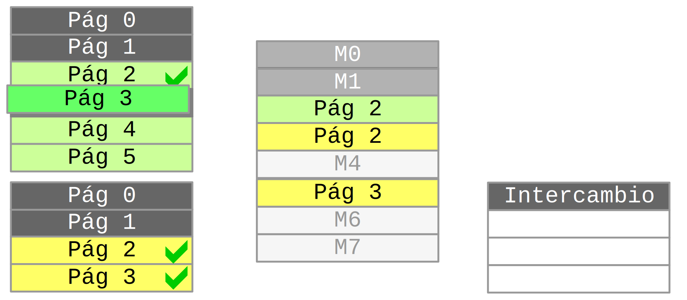
Swapping o intercambio
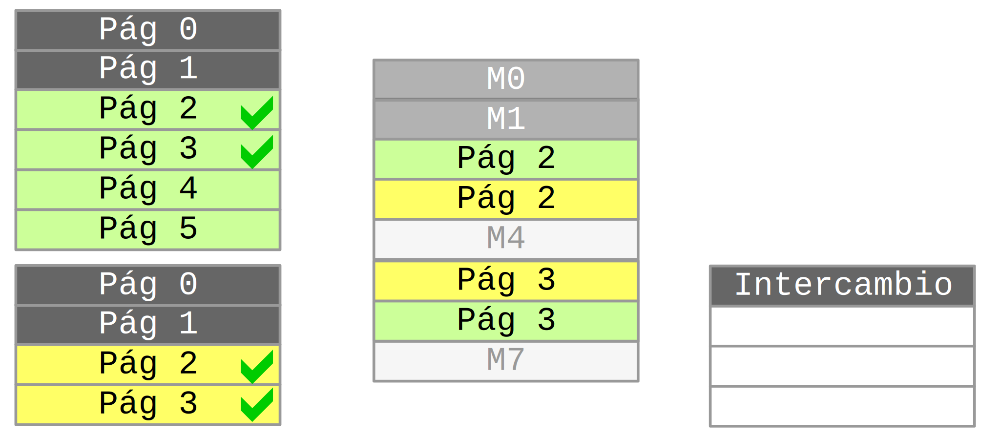
Swapping o intercambio
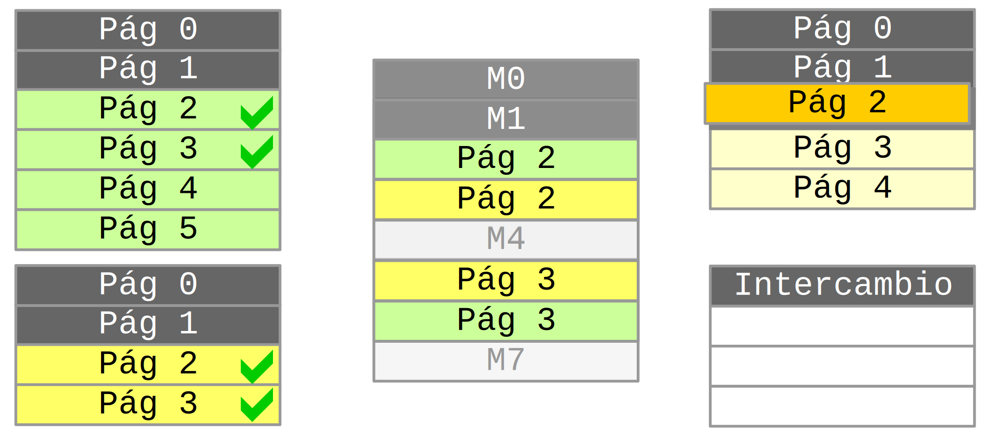
Swapping o intercambio
Swapping o intercambio
Swapping o intercambio
Swapping o intercambio
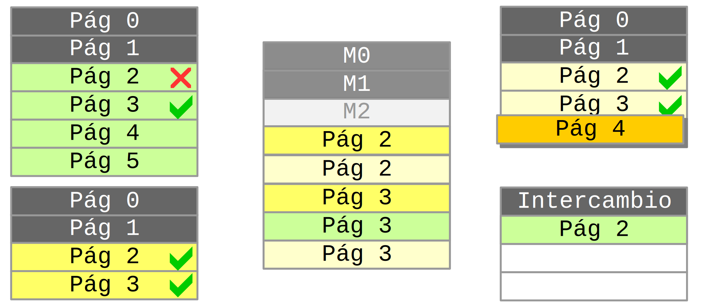
Swapping o intercambio
Memoria y protección
#include <stdio.h>
main()
{
int *p; // puntero a entero
int a = 2;
p = &a; // p apunta a la variable a
printf("%p\n",&a); // la dirección de a
printf("%p\n",p); // el contenido de p
*p = 3; // un 3 en la dirección apuntada por p
printf("%d\n",a); // imprimir el valor de a
}
Memoria y protección
#include <stdio.h>
main()
{
int *p;
int a = 2;
p = 0; // ahora p apunta al byte 0 de la memoria
printf("%p\n",&a);
printf("%p\n",p);
*p = 3;
printf("%d\n",a);
}
Memoria y protección
#include <stdio.h>
main()
{
char *m = "Hola mundo!";
puts(m); // imprime el mensaje
*m = 'B'; // primer caracter del mensaje
puts(m);
}